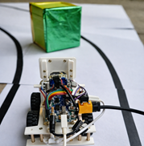

AUTONOMOUS DRIVING, PERCEPTION, PLANNING, CONTROL
카메라 기반 장애물 회피 자율주행
장애물이 차선을 가리면 그대로 충돌하던 자율주행 키트에서 문제를 차선 인식 성능이 아닌 차선과 장애물의 구분 문제로 다시 정의했습니다. YOLO로 두 대상을 구분하고 A* 회피 경로와 PID 제어를 연결해 인지, 판단, 제어 흐름을 완성했습니다.
- 기간
- 2022.07–2022.08
- 소속
- 중앙대학교 다빈치 창의학점제
- 역할
- 팀장, 인지, 경로계획, 제어 알고리즘 설계
- 기술
- Python, YOLO, A*, PID
01 / PROBLEM
차선을 가리는 장애물

차선 인식만으로는 장애물을 피할 수 없었습니다
초기 시스템은 카메라로 차선을 따라 주행했지만, 장애물이 차선을 가리면 인식 결과가 흔들리고 차량이 장애물과 충돌했습니다. 차선 검출 성능만 높이기보다, 차선과 장애물을 서로 다른 대상으로 구분하는 것이 먼저라고 판단했습니다.
장애물에 가려진 차선
차선과 장애물을 각각 인식
02 / PIPELINE
인지, 판단, 제어를 다시 연결했다
주행 영상 취득
차선과 장애물 구분
장애물 회피 경로 탐색
생성 경로 추종
회피 주행 실행
03 / RESULT
주행 오차와 충돌 감소
평균 횡방향 오차
목표 경로에서 차량이 좌우로 벗어난 정도를 비교했습니다. 인지, 경로계획과 제어를 연결한 뒤 오차를 줄이고, 장애물 환경에서도 충돌 없이 주행을 완주했습니다.
- 개선 전
- 0.17 m
- 개선 후
- 0.05 m 이하
장애물 환경 충돌 0회장애물을 인식하고 우회 경로를 따라 주행하도록 개선했습니다.
04 / OWNERSHIP
담당 범위
- 문제 정의장애물에 의한 차선 인식 실패 원인 분석
- 인지YOLO 기반 차선과 장애물 구분
- 판단A* 기반 회피 경로 탐색
- 제어PID 기반 경로 추종
팀장으로 인지, 판단, 제어 알고리즘 설계와 팀 역할 분배를 담당했습니다.
05 / CONNECTION
제어 문제에서 인지 문제로 관심이 확장됐다
경로계획과 제어를 구현해도 입력되는 인지 정보가 불안정하면 전체 시스템의 판단과 제어가 함께 무너진다는 것을 경험했습니다. 이후 차량 상태를 더 안정적으로 관측하고 추정하는 문제에 관심을 갖게 되었고, 대학원에서는 카메라와 라이다 기반 차량 추적과 센서융합 연구로 확장했습니다.
연결 연구 → 강화학습 기반 카메라-라이다 센서융합 차량 추적